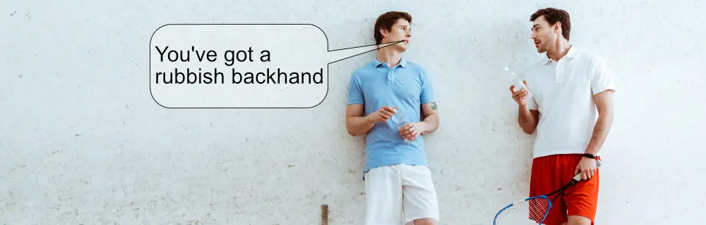

Can You Talk During Squash Rallies?
It Depends. If you are loud enough to distract your opponent, then no, and they could even ask for a let. But if your opponent can't hear you, then yes.
As I've just said, better to say nothing during a rally as it may cause issues, but much more interestingly is the "trash talk" between points. Putting aside the actual rules for official matches for a moment, squash is so very different from many sports in this regard.
It's one area that is not often talked about when discussion tournaments and inter-club matches. I clearly remember times during those club matches when my opponent would make a snide remark about the previous point. people often call this aspect "mind games" and it can be as blunt as the image below or so subtle than you take it as a compliment.
Oh! Sorry, did I. say that aloud?
Reverse Psychology
“You’ve got a great backhand boast”, said one opponent to me. “Thanks” I replied and stupidly played too many in the next game, nearly all of which my opponent hit winning drops off. We laughed about it during the team meal afterwards, but I still hope that guys steps on lego every day for the rest of his life.
I was “played”, which for non-native English speakers means I was manipulated. I was young and impressionable (I still am!), I honestly thought he was complimenting my boasts, which by the way are pretty good and quite hard to read, but that’s not the point. Another time, I heard people talking about my opponent and how he had just retired from the SAS (a well-known regiment of the British army, famed for their toughness and expertise). They also mentioned how he rarely lost close matches. From being calm, I suddenly became nervous. I lost the match due to my mindset rather than my or my opponent’s skill or fitness. Lambs, the club in central London this occurred in is gone now, so I’ll never have to re-live that disaster.
Who Dares Wins
I could probably recount a few more times similar things happened to me, but you get the point: DON’T PAY ANY ATTENTION TO ANYTHING SAID BEFORE OR DURING MATCHES! Learn from my lessons.
Back To During Rallies
Not only is talking a distraction, so are sounds; grunts, oohs, arrhs, etc. Any noise you make during a rally can be called a distraction by your opponent. The reality is that for 99% of cases, any noise you make is ignored by your opponent, unless it is a moment before they hit the ball. Any purposeful noises should be considered cheating. Don’t do it.
Friendly Banter
One more personal anecdote before I finish. I vividly remember a court session with Jonah Barrington. We had finished doing a Dunlop Roadshow somewhere and decided to play a length-only game. In addition, we both played with the cheap aluminium rackets we used during the event. Jonah immediately started talking to me during the rallies. Not all the time, just at certain points. I hit a very tight shot and moments after he returned it he said “I bet you thought that was going to be a winner“. It totally broke my concentration. I then started doing the same to him “Come on, old man, is that all you’ve got?“. We spent the next 20 minuets “trash talking” to each other. It’s one of my fondest memories of a court session. Next time you play with a friend, try it, it’s a lot of fun.
Final Thoughts
No talking during rallies. No noises as well. Don’t distract yourself with verbal outpourings. Don’t get distracted by your opponent’s talk – keep focused on your gameplan. If you are playing a friendly match, by all means have some fun trash talk, but ONLY for friendlies!
Continue Reading
• Previous: Can You Practice Too Much?
• Next: Coming Tomorrow
• Random: Take A Chance!
• Popular: What Is Back Corner Circling in Squash?